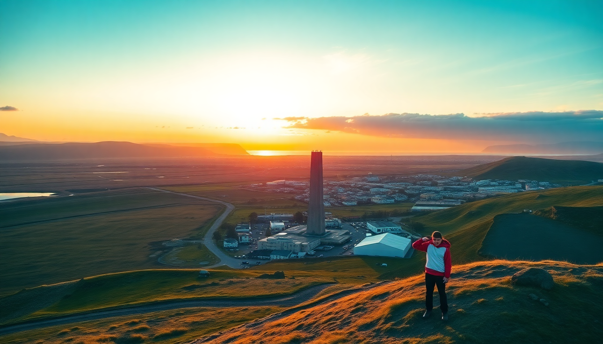

Best Time to Visit Iceland: Month-by-Month Guide for 2025

I’ve done Iceland in January (freezing, dark, but magical) and again in August (crowded, bright, but lush). The “best” time really depends on what you want: Northern Lights or puffins? Empty roads or open mountain huts? Below is a no-fluff month-by-month breakdown for 2025, anchored on Reykjavik, Akureyri, and Vik—the three places I keep coming back to.
What is the weather actually like in January and February?
Dark and cold—but not as miserable as you’d think. Day length in Reykjavik is about 4–5 hours in January, stretching to 9 hours by late February. The south coast around Vik stays windy, with frequent snow squalls. Akureyri in the north gets colder but often clearer skies. This is prime Northern Lights season because the nights are long and dark. I saw a solid display from Grótta Island Lighthouse near Reykjavik in early February 2024. Roads to Þingvellir National Park were icy, so I rented a 4x4 from Geysir car rental in Reykjanesbær—worth it.
- Northern Lights visibility peaks (check the aurora forecast at the Icelandic Met Office website daily)
- Blue Lagoon is less crowded, but book a week ahead anyway
- Ice Cave tours from Jökulsárlón glacier lagoon run daily—don’t skip this
- Reykjavik’s Food Hall (Hlemmur Mathöll) is a warm refuge; grab the lamb soup at Kronan
When should I visit for the Northern Lights vs. the midnight sun?
For the aurora, target September through March, with a sweet spot in October and February when the weather is slightly more stable. For midnight sun, June and July are your only real windows. In Akureyri, I watched the sun skim the horizon at 1 AM in late June—it never fully sets. That means you can hike Mount Súlur at 11 PM with full daylight. The trade-off: you won’t see a single star, let alone the aurora.
- Northern Lights peak months: February, March, September, October
- Midnight sun months: June and July (June 21 is the solstice, longest day)
- Best aurora viewing base: a cabin near Hella or Húsavík (away from Reykjavik’s light pollution)
- Best midnight sun base: Akureyri—stay at Hotel Akureyri for the bay view
How crowded does Iceland get in summer?
Very. July and August are the worst for crowds. The Golden Circle (Gullfoss, Geysir, Þingvellir) feels like a conveyor belt. Vik’s Reynisfjara black sand beach had tour buses parked three deep when I visited in August 2023. You can dodge the masses by going early—I hit Seljalandsfoss waterfall at 7 AM and had it to myself. Another hack: skip the south coast completely in July and head to the Westfjords or the Tröllaskagi Peninsula near Akureyri.
- Reykjavik: Laugavegur street is packed; book dinner at Matur og Drykkur two weeks ahead
- Vik: The Vikurprjón wool shop is worth a stop, but skip the overpriced Black Sand Restaurant near the beach
- Akureyri: Brynja ice cream on Skipagata has a line out the door—still worth it
- Alternative: Landmannalaugar in the highlands opens late June, but requires a 4x4
What about shoulder seasons—April, May, September, October?
These are my favorite months. May and September strike the balance: decent daylight (16–18 hours in May, 12–14 in September), fewer tourists, and lower car rental rates. I drove the entire Ring Road in May 2022 and saw maybe five other cars between Akureyri and Egilsstaðir. The catch: some mountain roads (like F-roads) are still closed until mid-June, so you can’t reach places like Askja or Thórsmörk. In September, the autumn colors in the Skaftafell area are stunning, and the Northern Lights start returning around the 20th.
- May: Best for puffins at Dyrhólaey or Látrabjarg (Westfjords)
- September: Northern Lights visible after 10 PM; Reykjavik Culture Night in late September
- April: Still snowy in Akureyri; good for skiing at Hlíðarfjall ski resort
- October: Muddy and windy in Vik; I got stuck on Fjaðrárgljúfur canyon trail—wear waterproof boots
Is winter (November–March) worth the hassle?
Yes, if you’re aurora-chasing or want a cheaper trip. November through March are the cheapest months for flights and hotels. I got a room at Hotel Borg in Reykjavik for half the summer rate in early December. The downsides: road closures are common, especially around Vik and the Eastfjords. I had to abandon a drive to Höfn because of a blizzard in January. Stick to the south coast and Golden Circle. Kópavogur (just outside Reykjavik) has good indoor options like Grafarvogur swimming pool for geothermal hot pots.
- Northern Lights: 90% chance of clear skies in Akureyri in February
- Road safety: Check road.is daily; rent a 4x4 from Blue Car Rental in Keflavik
- Winter festivals: Reykjavik Winter Lights Festival in early February
- What I’d skip: The Perlan Museum—overpriced and touristy; better to just see the real glaciers
FAQ
Do I need a rental car, or can I rely on buses? I’ve done both. For the south coast and Golden Circle, public buses (Strætó) work but are slow—Reykjavik to Vik takes 4 hours with a transfer. For Akureyri and the north, a car is almost mandatory. I rented from Lotus Car Rental in Reykjavik for a week in 2023 and paid about $80/day for a basic SUV. Book early for 2025—summer cars sell out by February.
What’s the best month for hiking in Iceland? July and August give you access to the highlands, but the trails are muddy. I prefer early September: cooler temps, fewer bugs (the midges in July around Mývatn are brutal), and clear skies. The Laugavegur trail (Fimmvörðuháls) is usually open until mid-September.
Is Iceland expensive in 2025? Yes, but less so in winter. A beer in Reykjavik costs about $12 year-round. I saved money by staying at Airbnb in self-catering apartments (like Hafnarfjörður near Reykjavik) and buying groceries at Bónus—the yellow discount chain. A bowl of lamb soup at Café Loki near Hallgrímskirkja is $18 but filling enough for a meal.
Conclusion
- For Northern Lights: Go February or October, base yourself near Akureyri or Hella
- For hiking and midnight sun: June or July, but expect crowds on the south coast
- For a balanced trip: May or September—fewer tourists, decent weather, and some aurora chances
- For budget travelers: November–March, but accept road risks and short days
- One final tip: Always book a flexible car rental. Iceland’s weather changes faster than the price of gas at N1 stations